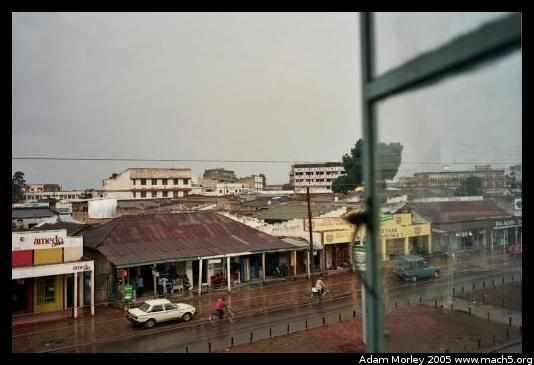

Kakamega is a city in western Kenya located near the largest surviving patch of rain forest in Kenya. This rain forest used to stretch all across the Congo, almost to the Indian Ocean. This is no longer the case today, mostly because of development and population growth, as I was told by a forest guide.
The reserve is home to a diverse array of both plant and animal species. Like many rain forests, the diverse array of plants have provided natural remedies over many years. Recently, international drug companies have realized the potential of these remedies, and begun to develop them for the market. One tree, Prunus africana, is used to treat prostate problems in men. I hugged the P. africana tree when I was there, hoping it would still be around when I become a "geezer." P. africana is currently considered endangered, both because of over use, and habitat destruction.
The Kakamega forest is home to many species which exist nowhere else in the world. At only about 230 square kilometers, it is quite small. And its canopy has decreased from around ninety percent at the turn of the 20th century to only about fifty percent now. As you can see below, there is a surprising amount of light in the forest for a rain forest.
I stayed overnight in a hotel in Kakamega. The hotel was extremely cheap, and somewhat sketchy. The view out my window was typical for a western Kenyan town.
The next morning, took a taxi to the forest reserve. I had planned on walking back, since it was only a few kilometers (eight or so), and I would have a better feel for the area. So I walked around town and found a taxi driver, negotiated a decent price (which was rather hard, as the forest is also home to an extremely fancy resort, more on that later) and headed for the forest.
One of the things I love about Kenyans is that they don't like to waste things. When I hopped into my taxi, I saw a corncob was being used to hold the window up. The crank had most likely broken, and the corncob proved to be just the right size.
The forest was dense, but my guide knew the way. He was a wealth of knowledge, pointing out trees which are used as local remedies, and trees which are prized for their bark. One experience I did not capture on film, but is firmly embedded in my memory is when, while my guide and I were looking at a tree, a man carrying a machete appeared suddenly, exiting from the brush. He wore no shoes, lacked a shirt, was smoking a cigarette, and wore an old blazer. He somehow fit the forest, perhaps because he looked as old as some of the trees. He stopped and conversed with my guide. He was a local medicine man, collecting the bark of trees to produce traditional remedies. It seems that whenever I travel, experiences like this occur, whether it's in a rain forest in Kenya, beside the fish market in Hamburg, or in the lobby of a seedy hotel in Pittsburgh.
One of the many trees in the forest.
In the middle of the forest, there is a clearing,
where I saw this creature, who was about the size of my hand!
The forest is home to the Colobus monkey (black/white), which was made famous as the "host" for Ebola in the movie Outbreak. Some people thought Ebola's natural reservoir was monkeys, while others thought it was bats from a cave in northern Kenya made famous by another movie (The Hot Zone, if I remember correctly). As I recently learned (thanks Laura!), the natural reservoir for Ebola is now thought to be three species of fruit bats, who can be infected by Ebola but asymptomatic. Nature and National Geographic have coverage of the recent finding.
The forest is also home to the red-tailed monkey and the blue monkey. Their acrobatics are absolutely amazing.
The forest employees also grow seedlings to replant native species, and to give out to locals. The locals can then grow their own trees, reducing pressure on the trees in the forest. One of the regulative duties performed by the forest staff is to ensure that only local medicine men are removing the barks of trees, and that no overuse is occurring.
I decided to have lunch at Rondo Retreat Center, an extremely fancy, high class place considering the location in the middle of the rain forest. White tablecloth, even. What I did not know in advance was that Rondo, "Belong[ed] to the Trinity Fellowship, a Christian society committed to communication and conservation." Many westerners visit Rondo over the weekend to get out of the big city, or the rural areas. Let's just say the whole experience was unique. But then, what isn't unique when traveling? Rondo is also where I met Daniel from the CDC whom I visited in Kisumu.
After lunch, I walked back to Shinyalu. The road is surprisingly busy after exiting the forest. Along the way, I met a few locals who were headed to watch the football match. They invited me along, so I watched my first Kenyan football match:
There were definitely times when it seemed that I was more interesting than the football match to the other spectators (and sometimes the players!).
Shinyalu is a small town, but is larger than many other villages I'd been to in Kenya. By the time I got back to Shinyalu, it was around five in the evening, and the matatu to Kakamega had already made its final run for the day. Luckily for me, there was another matatu which took me back to the main road so I could return to Kabula. After some banging on the sliding door to get it to close, and a few false starts, we were off. The remainder of the journey was uneventful.
Adam can be reached at adam dot morley at gmail dot com